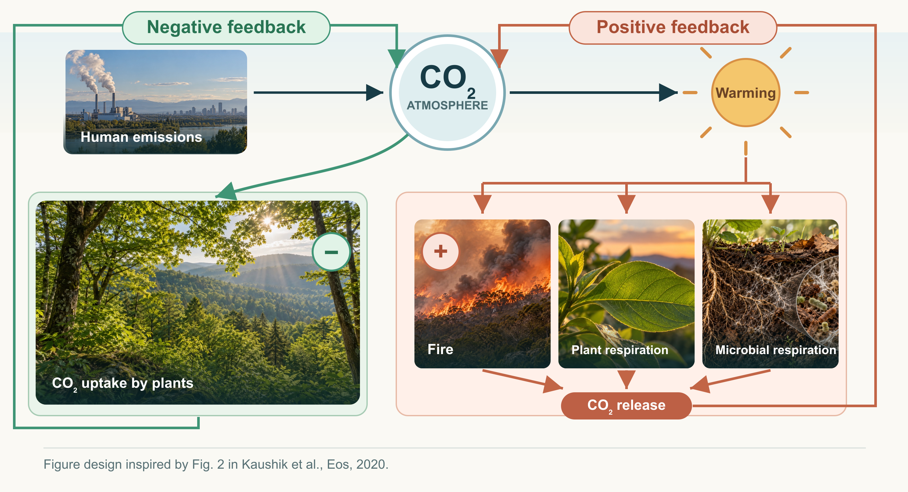
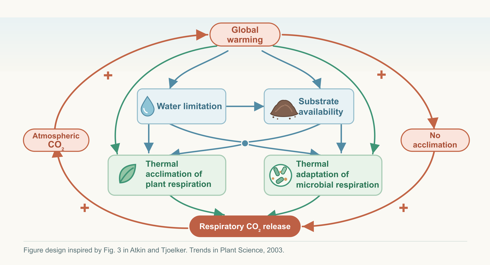

Trends of Terrestrial Carbon-Climate Feedback

Terrestrial carbon–climate feedbacks can be either positive, amplifying climate change, or negative, dampening it, with their balance varying across ecosystems and over time. Using global eddy-covariance observations over the past 2–3 decades, we ask:
- Where and when are terrestrial carbon–climate feedbacks dominated by positive versus negative feedbacks across climates and biomes?
- What mechanisms could shift the terrestrial biosphere from predominantly negative toward positive carbon–climate feedback in the future?
Related Publications: Manuscript is under review :)
Thermal Acclimation of Ecosystem Respiration

Building on our work to identify where and when terrestrial carbon–climate feedbacks are positive or negative, we investigate the mechanisms that determine whether positive feedbacks strengthen or weaken under continued climate change. In particular, we ask:
- How will acclimation and adaptation of organisms, including plants and microbes, dampen or amplify positive carbon–climate feedback?
- How do abiotic and indirect processes, such as warming-induced water limitation and changes in substrate availability, regulate the strength of this feedback?
Related Publications: Manuscript is under review :)